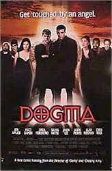

Contents | Features | Reviews | Books | Archives | Store |
 |
|
| Movie Credits | Buy It! |
Dogma
Review by
Joe Barlow
Posted 12 November 1999
|  |
Written
and Directed by Kevin
Smith Starring
Matt Damon,
|
For months,
the film sat on Smith's shelf. Now, courtesy of a new distributor (Lion's Gate
Entertainment), Dogma is finally playing at your local multiplex, drawing
sell-out crowds and receiving some of the best reviews and word-of-mouth of any
movie this year. Watching it, one is struck not by thoughts of blasphemy but by
the deep spiritual foundation upon which Smith, a devout Catholic, has built
this remarkable film. This is the movie that so terrified one of
America's most powerful corporations?
The story:
Concerned with dwindling membership, the Catholic Church decides to update its
image. Gone is the tired symbol of Jesus on the cross, an image church officials
now believe to be 'depressing.' As Cardinal Glick (George Carlin) explains,
"Christ didn't come to Earth to give us the willies!" Replacing the
crucifix is 'Buddy Jesus,' a new, happier logo depicting the savior giving the
thumbs-up sign. As an additional incentive for new members to join, the
organization makes a special offer: if a person walks through the doorway of a
church on a certain day, all of that person's sins will be instantly forgiven --
sort of like a 'try before you buy' deal.
This is
good news indeed for Loki (Matt Damon) and Bartlby (Ben Affleck), two renegade
angels who have been thrown out of Heaven and sentenced to a fate worse than
Hell: eternal life in Wisconsin. They see a possible loophole in the church's
offer: if they pass through the door and have their sins forgiven, shouldn't
they then be able to return to Heaven? Well, yes. The downside: this loophole
would serve as proof that God is not perfect. Since all of creation is built on
the belief that God is infallible, the universe will instantly blink out of
existence if the angels' plan succeeds. Only thing is, Loki and Bartlby, poor
schmucks, don't realize this.
Bethany
Sloan (Linda Fiorentino) is a thirty-something atheist who works in an abortion
clinic. Religion has played no part in her life since she lost her ability to
bear children after a womb infection. As it happens, however, Bethany is the
last living descendant of Jesus Christ; therefore, she is given the task of
stopping Loki and Bartlby. Along the way the reluctant heroine receives
assistance from a number of increasingly oddball sidekicks, including the muse
Serendipity (Salma Hayek), a black apostle named Rufus (Chris Rock), and a pair
of accidental prophets, Jay (Jason Mewes) and Silent Bob (director Kevin Smith
himself).
Smith is
more known for his clever wordplay than his directorial ability (he freely
admits that his style of moviemaking consists of simply pointing the camera at
the actors and shooting), and Dogma isn't likely to change anyone's
opinion of his visual blandness. But this is a story driven by its dialogue, and
once again Smith proves, as he did in Chasing Amy, that he has few equals
when it comes to eloquent verbal prose. The script is simply brilliant -- Smith
fills every line with satire that doesn't merely bite but actually rips out huge
chunks of meat. Nothing is sacred here, and yet, oddly, everything is: Dogma's
spiritual side is plainly evident, even as the film makes some startling comedic
revelations about Jesus' lineage. And wait 'til you see who plays God.
Dogma
encourages thought and discussion. It wants all viewers -- Christian, Muslim,
atheist, etc. -- to leave the theater with a better grasp of their own
spirituality, but makes no attempt to change anyone's mind about anything.
Naturally, this approach is threatening to some people, the stoic sort who view
church as a chore to be endured rather than an excuse for celebration. But I
side with Smith: God definitely has a sense of humor. After all, as the director
points out in the film's disclaimer, just look at the platypus.
Contents | Features | Reviews
| Books | Archives | Store
Copyright © 1999 by Nitrate Productions, Inc. All
Rights Reserved.